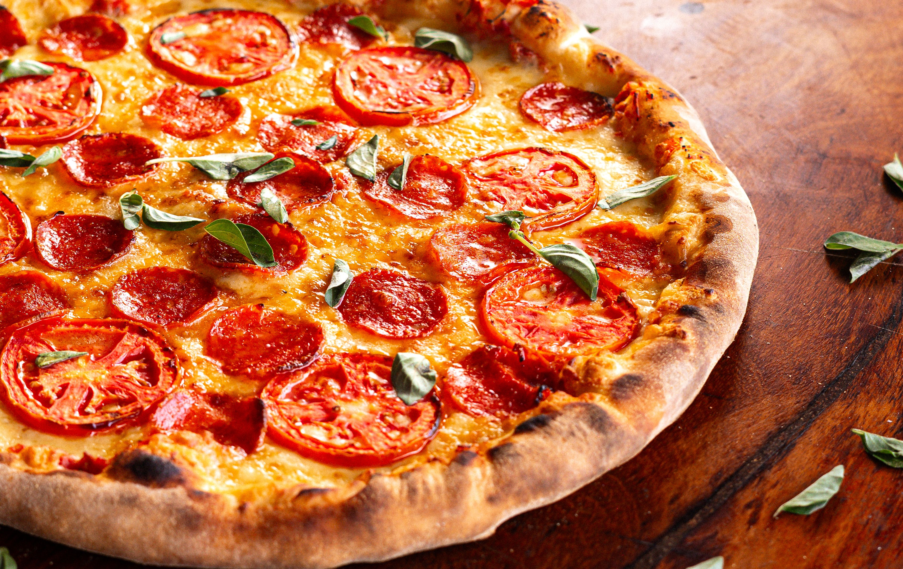

Home
Pepperoni Pizza Recipe

Description
My kids love pizza, so pepperoni pizza is usually a surefire dinner win. But if I'm being honest, I rarely make pizza for my kids. I view pizza as a cheat night for me, and I get delivery.
So when I decided to make pizza at home, I knew it needed to be better than your average delivery. It needed tons of pepperoni, a nice crust, great flavor, and maybe even a surprise or two to put it over the top.
Ingredients
- 16 ounces pizza dough, store-bought or homemade
- 1/2 cup pizza sauce
- 18 to 20 slices pepperoni
- 12 ounces mozzarella cheese, grated
- 1/2 teaspoon ground black pepper
- 1 teaspoon fresh oregano, optional
- Flour for rolling and shaping dough
Directions
- Preheat the oven to 500°F: If you are using a pizza stone, preheat it in the oven for at least 20 minutes so it is nice and hot as well.
- Make the sauce: If you are using my sauce recipe, stir together the ingredients. The sauce recipe makes just enough for one large pizza. You can easily double it if you are making more than one pizza.
- Roll out the dough: Roll out dough on a lightly floured surface. If it's hard to roll, let it rest for 5 minutes so it can come to room temperature. For a large pizza, I like to roll my dough into about a 14-inch diameter circle.
- Add the toppings: Add sauce in a light layer all over the pizza, leaving about 1/4-inch crust around the edges. Chop half of the pepperoni and sprinkle it over the sauce. Top the pizza with grated cheese and the rest of the pepperoni. Season with black pepper.
- Cook the pizza: If you're using a pizza stone, carefully slide pizza into the center of the preheated pizza stone. Cook for 6 minutes, then rotate the pizza halfway so it cooks evenly. Cook for another 6 to 8 minutes, or until the crust is golden brown and charred in spots.
If you're using a skillet, press the dough into a cast iron skillet and add toppings. Place the skillet over a high heat burner for 2 minutes to get it preheated and get the crust cooking right away. Then transfer to a 500 °F oven and bake for 10 to 12 minutes, or until the crust is golden brown.
- Slice and serve: Use pizza peel to slide pizza out onto a cutting board. Let the pizza rest for a minute and slice into pieces. Season with fresh oregano (optional). Serve while warm with a side salad.
- Enjoy!